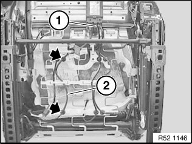
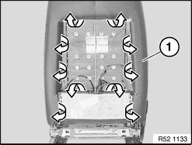
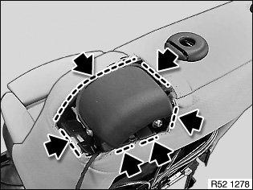
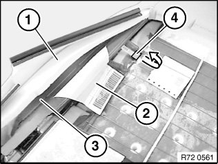
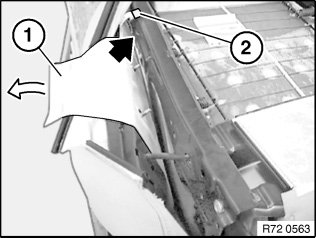
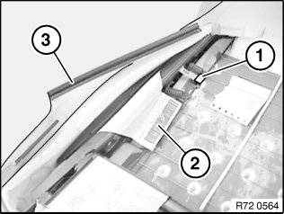
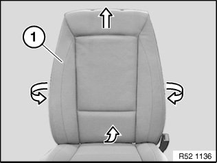
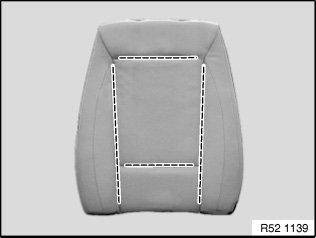
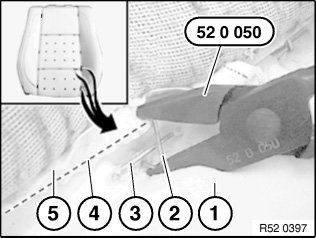
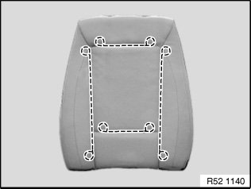

52 13 405 Replacing Backrest Cover For Left or Right Front Seat (Normal / Manual)
52 13 405 Replacing backrest cover for left or right front seat (normal / manual)
Special tools required:

Necessary preliminary tasks:
- Remove front seat
- Remove guide sleeves
- Remove cover for release mechanism
Version with seat heating only:

Unfasten plug connection (1) and disconnect.
Disconnect cable straps.
Release wiring harness (2) from cable holders on seat mechanism.
IMPORTANT: Feed the wiring harness carefully through the seat and backrest mechanism as the edges of the frame can be sharp.

Detach backrest cover (1) from backrest frame.

Detach backrest cover in marked area.

Detach mounting strip (4) from flexmat.
Carefully pull airbag module (3) with threaded pins out of backrest frame and feed out between padding (1) and inner bag (2).
Set down airbag module (3) to one side.

Installation:
Pull inner bag (1) fully over airbag module and threaded pins.
Feed in mounting strip (2) of inner bag (1) through backrest frame.
Insert threaded pins into backrest frame and secure with new nuts.
No inner bag material is permitted to project through the hole in the inner frame.
Install nuts and tighten down.
Tightening torques 72 12 02AZ.
Installation:
Inner bag must be between airbag module and backrest frame.

Engage mounting strip (1) of inner bag in flexmat.
Position inner bag (2) smoothly over backrest frame.
Engage backrest cover (3) in backrest frame.

Pull off backrest cover (1) with padding sideways and towards top from backrest frame.

Release all retainers in marked area.
Remove backrest cover from padding.
NOTE: Remove all remnants of retainers from backrest cover and padding.

Installation:
Bend new retainer (2) with special tool 52 0 050.
1. Padding
2. Retainer
3. Trim wire in padding
4. Trim wire in backrest cover
5. Backrest cover
Replacement of backrest cover:
Pull trim wires out of backrest cover.

Cut new backrest cover to size and insert trim threads.